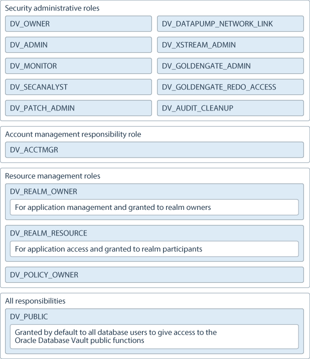

13 Oracle Database Vault Schemas, Roles, and Accounts
Oracle Database Vault provides schemas that contain Database Vault objects, roles that provide separation of duty for specific tasks, and default user accounts.
- Oracle Database Vault Schemas
The Oracle Database Vault schemas,DVSYSandDVF, support the administration and run-time processing of Oracle Database Vault. - Oracle Database Vault Roles
Oracle Database Vault provides default roles that are based on specific user tasks and adhere to separation of duty concepts. - Oracle Database Vault Accounts Created During Registration
You must create accounts for the Oracle Database Vault Owner and Oracle Database Vault Account Manager during the registration process. - Backup Oracle Database Vault Accounts
As a best practice, you should maintain backup accounts for theDV_OWNERandDV_ACCTMGRroles.
13.1 Oracle Database Vault Schemas
The Oracle Database Vault schemas, DVSYS and DVF, support the administration and run-time processing of Oracle Database Vault.
- DVSYS Schema
TheDVSYSschema contains Oracle Database Vault database objects. - DVF Schema
TheDVFschema is the owner of the Oracle Database VaultDBMS_MACSEC_FUNCTIONPL/SQL package.
Parent topic: Oracle Database Vault Schemas, Roles, and Accounts
13.1.1 DVSYS Schema
The DVSYS schema contains Oracle Database Vault database objects.
These objects store Oracle Database Vault configuration information and support the administration and run-time processing of Oracle Database Vault.
In a default installation, the DVSYS schema is locked. The DVSYS schema also owns the AUDIT_TRAIL$ table.
In a multitenant environment, the DVSYS schema is considered a common schema, which means that the objects within DVSYS (tables, views, PL/SQL packages, and so on) are automatically available to any child pluggable databases (PDBs). In addition, the DVSYS schema account cannot switch to other containers using the ALTER SESSION statement.
Oracle Database Vault secures the DVSYS schema by using a protected schema design. A protected schema design guards the schema against improper use of system privileges (for example, SELECT ANY TABLE, CREATE ANY VIEW, or DROP ANY).
Oracle Database Vault protects and secures the DVSYS schema in the following ways:
-
The
DVSYSprotected schema and its administrative roles cannot be dropped. By default, theDVSYSaccount is locked. -
By default, users cannot directly log into the
DVSYSaccount. To control the ability of users to directly log into this account, you can run theDBMS_MACADM.DISABLE_DV_DICTIONARY_ACCTSprocedure to prevent users from logging in and theDBMS_MACADM.ENABLE_DV_DICTIONARY_ACCTSprocedure to allow users to log in. -
Statements such as
CREATE USER,ALTER USER,DROP USER,CREATE PROFILE,ALTER PROFILE, andDROP PROFILEcan only be issued by a user with theDV_ACCTMGRrole. A user logged in with theSYSDBAadministrative privilege can issue these statements only if it is allowed to do so by modifying the Can Maintain Accounts/Profiles rule set. -
The powerful
ANYsystem privileges for database definition language (DDL) and data manipulation language (DML) commands are blocked in the protected schema. This means that the objects in theDVSYSschema must be created by the schema account itself. Also, access to the schema objects must be authorized through object privilege grants. -
Object privileges in the
DVSYSschema can only be granted to Database Vault administrative roles in the schema. This means that users can access the protected schema only through predefined administrative roles. -
Only the protected schema account
DVSYScan issueALTER ROLEstatements on Database Vault predefined administrative roles of the schema. Oracle Database Vault Roles describes Oracle Database Vault predefined administrative roles in detail. -
The
SYS.DBMS_SYS_SQL.PARSE_AS_USERprocedure cannot be used to run SQL statements on behalf of the protected schemaDVSYS.
Note:
Database users can grant additional object privileges and roles to the Oracle Database Vault administrative roles (DV_ADMIN and DV_OWNER, for example) provided they have sufficient privileges to do so.
Parent topic: Oracle Database Vault Schemas
13.1.2 DVF Schema
The DVF schema is the owner of the Oracle Database Vault DBMS_MACSEC_FUNCTION PL/SQL package.
This package contains the functions that retrieve factor identities. After you install Oracle Database Vault, the installation process locks the DVF account to better secure it. When you create a new factor, Oracle Database Vault creates a new retrieval function for the factor and saves it in this schema.
In a multitenant environment, the DVF user cannot switch to other containers using the ALTER SESSION statement.
By default, users cannot directly log into the DVF account. To control the ability of users to directly log into this account, you can run the DBMS_MACADM.DISABLE_DV_DICTIONARY_ACCTS procedure to prevent users from logging in and the DBMS_MACADM.ENABLE_DV_DICTIONARY_ACCTS procedure to allow users to log in.
Parent topic: Oracle Database Vault Schemas
13.2 Oracle Database Vault Roles
Oracle Database Vault provides default roles that are based on specific user tasks and adhere to separation of duty concepts.
- About Oracle Database Vault Roles
Oracle Database Vault provides a set of roles that are required for managing Oracle Database Vault. - Privileges of Oracle Database Vault Roles
The Oracle Database Vault roles are designed to provide the maximum benefits of separation of duty. - Granting Oracle Database Vault Roles to Users
You can use Enterprise Manager Cloud Control to grant Oracle Database Vault roles to users. - DV_OWNER Database Vault Owner Role
TheDV_OWNERrole enables you to manage the Oracle Database Vault roles and its configuration. - DV_ADMIN Database Vault Configuration Administrator Role
TheDV_ADMINrole controls the Oracle Database Vault PL/SQL packages. - DV_MONITOR Database Vault Monitoring Role
TheDV_MONITORrole is used for monitoring Oracle Database Vault. - DV_SECANALYST Database Vault Security Analyst Role
TheDV_SECANALYSTrole enables users to analyze activities. - DV_AUDIT_CLEANUP Audit Trail Cleanup Role
TheDV_AUDIT_CLEANUProle is used for purge operations. - DV_DATAPUMP_NETWORK_LINK Data Pump Network Link Role
TheDV_DATAPUMP_NETWORK_LINKrole is used for Data Pump import operations. - DV_XSTREAM_ADMIN XStream Administrative Role
TheDV_XSTREAM_ADMINrole is used for Oracle XStream. - DV_GOLDENGATE_ADMIN GoldenGate Administrative Role
TheDV_GOLDENGATE_ADMINrole is used with Oracle GoldenGate. - DV_GOLDENGATE_REDO_ACCESS GoldenGate Redo Log Role
TheDV_GOLDENGATE_REDO_ACCESSrole is used with Oracle GoldenGate. - DV_PATCH_ADMIN Database Vault Database Patch Role
TheDV_PATCH_ADMINrole is used for patching operations. - DV_ACCTMGR Database Vault Account Manager Role
TheDV_ACCTMGRrole is a powerful role, used for accounts management. - DV_REALM_OWNER Database Vault Realm DBA Role
TheDV_REALM_OWNERrole is used for realm management. - DV_REALM_RESOURCE Database Vault Application Resource Owner Role
TheDV_REALM_RESOURCErole is use for the management of realm resources. - DV_POLICY_OWNER Database Vault Owner Role
TheDV_POLICY_OWNERrole enables database users to manage to a limited degree Oracle Database Vault policies. - DV_PUBLIC Database Vault PUBLIC Role
TheDV_PUBLICrole is no longer used.
Parent topic: Oracle Database Vault Schemas, Roles, and Accounts
13.2.1 About Oracle Database Vault Roles
Oracle Database Vault provides a set of roles that are required for managing Oracle Database Vault.
The following illustration shows how these roles are designed to implement the first level of separation of duties within the database. How you use these roles depends on the requirements that your company has in place.
Figure 13-1 How Oracle Database Vault Roles Are Categorized

Description of "Figure 13-1 How Oracle Database Vault Roles Are Categorized"
Note:
You can grant additional object privileges and roles to the Oracle Database Vault roles to extend their scope of privileges. For example, a user logged in with the SYSDBA administrative privilege can grant object privileges to an Oracle Database Vault role as long as the object is not in the DVSYS schema or realm.
Parent topic: Oracle Database Vault Roles
13.2.2 Privileges of Oracle Database Vault Roles
The Oracle Database Vault roles are designed to provide the maximum benefits of separation of duty.
The DV_PATCH_ADMIN, DV_XSTREAM, DV_GOLDENGATE_ADMIN, and DV_GOLDENGATE_REDO_ACCESS roles are not included in the following sections because they have no system privileges.
DVSYS Schema, EXECUTE Privilege
Roles that can use this privilege:
DV_ADMIN(includes theEXECUTEprivilege on all Oracle Database Vault PL/SQL packages)DV_OWNER(includes theEXECUTEprivilege on all Oracle Database Vault PL/SQL packages)DV_POLICY_OWNER(on someDBMS_MACADMprocedures)
Roles that are denied this privilege:
DV_ACCTMGRDV_AUDIT_CLEANUPDV_MONITORDV_PUBLICDV_REALM_OWNERDV_REALM_RESOURCEDV_SECANALYST
DVSYS Schema, SELECT Privilege
Roles that can use this privilege:
DV_ADMINDV_AUDIT_CLEANUP(on some Database Vault tables and views; can performSELECTstatements on theAUDIT_TRAIL$table, and theDV$ENFORCEMENT_AUDITandDV$CONFIGURATION_AUDITviews)DV_MONITORDV_OWNERDV_POLICY_OWNER(on someDBMS_MACADMprocedures and onPOLICY_OWNER* views only)DV_SECANALYST(on some Database Vault views:DV_SECANALYSTcan queryDVSYSschema objects through Oracle Database Vault-supplied views)
Roles that are denied this privilege:
DV_ACCTMGRDV_PUBLICDV_REALM_OWNERDV_REALM_RESOURCE
DVSYS Schema, DELETE Privilege
Roles that can use this privilege:
DV_AUDIT_CLEANUP(can performDELETEon some Database Vault tables and views, on theAUDIT_TRAIL$table, and theDV$ENFORCEMENT_AUDITandDV$CONFIGURATION_AUDITviews)DV_OWNER(can performDELETEon some Database Vault tables and views, on theAUDIT_TRAIL$table, and theDV$ENFORCEMENT_AUDITandDV$CONFIGURATION_AUDITviews)
Roles that are denied this privilege:
DV_ACCTMGRDV_ADMINDV_MONITORDV_POLICY_OWNERDV_PUBLICDV_REALM_OWNERDV_REALM_RESOURCEDV_SECANALYST
DVSYS Schema, Grant Privileges on Objects
Roles that can use this privilege: None
Roles that are denied this privilege:
DV_ACCTMGRDV_ADMINDV_AUDIT_CLEANUPDV_MONITORDV_OWNERDV_POLICY_OWNERDV_PUBLICDV_SECANALYSTDV_REALM_OWNERDV_REALM_RESOURCE
DVF Schema, EXECUTE Privilege
Roles that can use this privilege:
DV_OWNER
Roles that are denied this privilege:
DV_ACCTMGRDV_ADMINDV_AUDIT_CLEANUPDV_MONITORDV_OWNERDV_POLICY_OWNERDV_PUBLICDV_REALM_OWNERDV_REALM_RESOURCEDV_SECANALYST
DVF Schema, SELECT Privilege
Roles that can use this privilege:
DV_OWNERDV_SECANALYST
Roles that are denied this privilege:
DV_ACCTMGRDV_ADMINDV_AUDIT_CLEANUPDV_MONITORDV_POLICY_OWNERDV_PUBLICDV_REALM_OWNERDV_REALM_RESOURCE
Monitor Database Vault Privilege
Roles that can use this privilege:
DV_ADMINDV_OWNERDV_MONITORDV_SECANALYST
Roles that are denied this privilege:
DV_ACCTMGRDV_AUDIT_CLEANUPDV_POLICY_OWNERDV_PUBLICDV_REALM_OWNERDV_REALM_RESOURCE
Run Database Vault Reports Privilege
Roles that can use this privilege:
DV_ADMINDV_OWNERDV_SECANALYST
Roles that are denied this privilege:
DV_ACCTMGRDV_AUDIT_CLEANUPDV_MONITORDV_POLICY_OWNERDV_PUBLICDV_REALM_OWNERDV_REALM_RESOURCE
SYS Schema, SELECT Privilege
Roles that can use this privilege:
DV_MONITORDV_OWNERDV_SECANALYST(on the same system views asDV_OWNERandDV_ADMIN)
Roles that are denied this privilege:
DV_ACCTMGRDV_ADMINDV_AUDIT_CLEANUPDV_POLICY_OWNERDV_PUBLICDV_REALM_OWNERDV_REALM_RESOURCE
SYSMAN Schema, SELECT Privilege
Roles that can use this privilege:
DV_OWNER(portions ofSYSMAN)DV_SECANALYST(portions ofSYSMAN)
Roles that are denied this privilege:
DV_ACCTMGRDV_ADMINDV_AUDIT_CLEANUPDV_MONITORDV_POLICY_OWNERDV_PUBLICDV_REALM_OWNERDV_REALM_RESOURCE
CREATE , ALTER , DROP User Accounts and Profiles Privilege
This privilege does not include the ability to drop or alter the DVSYS account, nor change the DVSYS password.
Role that can use this privilege:
DV_ACCTMGR
Roles that are denied this privilege:
DV_ADMINDV_AUDIT_CLEANUPDV_MONITORDV_OWNERDV_POLICY_OWNERDV_PUBLICDV_REALM_OWNERDV_REALM_RESOURCEDV_SECANALYST
Manage Objects in Schemas that Define a Realm
This privilege includes ANY privileges, such as CREATE ANY , ALTER ANY , and DROP ANY.
Role that can use this privilege:
DV_REALM_OWNER(The user with this role also must be the realm participant or owner to exercise his or her system privileges.)
Roles that are denied this privilege:
DV_ACCTMGRDV_AUDIT_CLEANUPDV_ADMINDV_MONITORDV_OWNER(portions ofSYSMAN)DV_POLICY_OWNERDV_PUBLICDV_REALM_RESOURCEDV_SECANALYST(portions ofSYSMAN)
RESOURCE Role Rrivileges
The RESOURCE role provides the following system privileges: CREATE CLUSTER , CREATE INDEXTYPE , CREATE OPERATOR , CREATE PROCEDURE , CREATE SEQUENCE , CREATE TABLE , CREATE TRIGGER, CREATE TYPE.
Role that can use this privilege:
DV_REALM_RESOURCE
Roles that are denied this privilege:
DV_ACCTMGRDV_ADMINDV_AUDIT_CLEANUPDV_MONITORDV_OWNER(portions ofSYSMAN)DV_POLICY_OWNERDV_PUBLICDV_REALM_OWNERDV_SECANALYST(portions ofSYSMAN)
Parent topic: Oracle Database Vault Roles
13.2.3 Granting Oracle Database Vault Roles to Users
You can use Enterprise Manager Cloud Control to grant Oracle Database Vault roles to users.
Parent topic: Oracle Database Vault Roles
13.2.4 DV_OWNER Database Vault Owner Role
The DV_OWNER role enables you to manage the Oracle Database Vault roles and its configuration.
In this guide, the example account that uses this role is sec_admin_owen.
Privileges Associated with the DV_OWNER Role
The DV_OWNER role has the administrative capabilities that the DV_ADMIN role provides, and the reporting capabilities the DV_SECANALYST role provides.
This role also provides privileges for monitoring Oracle Database Vault. It is created when you install Oracle Database Vault, and has the most privileges on the DVSYS schema. It also has the DV_ADMIN role.
To find the full list of system and object privileges associated with the DV_OWNER role, you can log into the database instance and enter the following queries:
SELECT TABLE_NAME, OWNER, PRIVILEGE FROM DBA_TAB_PRIVS WHERE GRANTEE = 'DV_OWNER'; SELECT PRIVILEGE FROM DBA_SYS_PRIVS WHERE GRANTEE = 'DV_OWNER';
When you configure and enable Oracle Database Vault, the DV_OWNER account is created. The user who is granted this role is also granted the ADMIN option and can grant any Oracle Database Vault roles (except DV_ACCTMGR) to any account. Users granted this role also can run Oracle Database Vault reports and monitor Oracle Database Vault.
Tip:
Oracle strongly recommends that you create separate, named account for the DV_OWNER user. This way, if the user is no longer available (for example, he or she left the company), then you can easily recreate this user account and then grant this user the DV_OWNER role.
How Are GRANT and REVOKE Operations Affected by DV_OWNER?
Anyone with the DV_OWNER role can grant the DV_OWNER and DV_ADMIN roles to another user.
The account granted this role can revoke any granted Database Vault role from another account. Accounts such as SYS or SYSTEM, with the GRANT ANY ROLE system privilege alone (directly granted or indirectly granted using a role) do not have the right to grant or revoke the DV_OWNER role to or from any other database account. Note also that a user with the DV_OWNER role cannot grant or revoke the DV_ACCTMGR role.
Managing Password Changes for Users Who Have the DV_OWNER Role
Before you can change the password for another user who has been granted the DV_OWNER role, you must revoke the DV_OWNER role from that user account.
However, be cautious about revoking the DV_OWNER role. At least one user on your site must have this role granted. If another DV_OWNER user has been granted this role and needs to have his or her password changed, then you can temporarily revoke DV_OWNER from that user. Note also that if you have been granted the DV_OWNER role, then you can change your own password without having to revoke the role from yourself.
To change the DV_OWNER user password:
-
Log into the database instance using an account that has been granted the
DV_OWNERrole. -
Revoke the
DV_OWNERrole from the user account whose password needs to change. -
Connect as a user who has been granted the
DV_ACCTMGRrole and then change the password for this user. -
Connect as the
DV_OWNERuser and then grant theDV_OWNERrole back to the user whose password you changed.
DV_OWNER Status When Oracle Database Vault Security Is Disabled
The protection of all Oracle Database Vault roles is enforced only if Oracle Database Vault is enabled.
If Oracle Database Vault is disabled, then any account with the GRANT ANY ROLE system privilege can perform GRANT and REVOKE operations on protected Database Vault roles.
Related Topics
Parent topic: Oracle Database Vault Roles
13.2.5 DV_ADMIN Database Vault Configuration Administrator Role
The DV_ADMIN role controls the Oracle Database Vault PL/SQL packages.
These packages are the underlying interface for the Database Vault Administrator user interface in Oracle Enterprise Manager Cloud Control.
Privileges Associated with the DV_ADMIN Role
The DV_ADMIN role has the EXECUTE privilege on the DVSYS packages (DBMS_MACADM and DBMS_MACUTL).
DV_ADMIN also has the capabilities provided by the DV_SECANALYST role, which allow the user to run Oracle Database Vault reports and monitor Oracle Database Vault. During installation, the DV_ADMIN role is granted to the DV_OWNER role with the ADMIN OPTION.
In addition, the DV_ADMIN role provides the SELECT privilege on the DBA_DV_POLICY, DBA_DV_POLICY_OWNER, and DBA_DV_POLICY_OBJECT data dictionary views.
To find the full list of system and object privileges associated with the DV_ADMIN role, log into the database instance with sufficient privileges and then enter the following queries:
SELECT TABLE_NAME, OWNER, PRIVILEGE FROM DBA_TAB_PRIVS WHERE GRANTEE = 'DV_ADMIN'; SELECT PRIVILEGE FROM DBA_SYS_PRIVS WHERE GRANTEE = 'DV_ADMIN';
How Are GRANT and REVOKE Operations Affected by DV_ADMIN?
Accounts such as SYS or SYSTEM, with the GRANT ANY ROLE system privilege alone do not have the rights to grant or revoke DV_ADMIN from any other database account.
The user with the DV_OWNER role can grant or revoke this role to and from any database account.
Managing Password Changes for Users Who Have the DV_ADMIN Role
Before you can change the password for a user who has been granted the DV_ADMIN role, you must revoke the DV_ADMIN role from this account.
If you have been granted the DV_ADMIN role, then you can change your own password without having to revoke the role from yourself.
To change the DV_ADMIN user password:
-
Log into the database instance using an account that has been granted the
DV_OWNERrole. -
Revoke the
DV_ADMINrole from the user account whose password needs to change. -
Connect as a user who has been granted the
DV_ACCTMGRrole and then change the password for this user. -
Connect as the
DV_OWNERuser and then grant theDV_ADMINrole back to the user whose password you changed.
DV_ADMIN Status When Oracle Database Vault Security Is Disabled
The protection of all Oracle Database Vault roles is enforced only if Oracle Database Vault is enabled.
If Oracle Database Vault is disabled, then any account with the GRANT ANY ROLE system privilege can perform GRANT and REVOKE operations on protected Database Vault roles.
Related Topics
Parent topic: Oracle Database Vault Roles
13.2.6 DV_MONITOR Database Vault Monitoring Role
The DV_MONITOR role is used for monitoring Oracle Database Vault.
The DV_MONITOR role enables the Oracle Enterprise Manager Cloud Control agent to monitor Oracle Database Vault for attempted violations and configuration issues with realm or command rule definitions.
This role enables Cloud Control to read and propagate realm definitions and command rule definitions between databases.
Privileges Associated with the DV_MONITOR Role
There are no system privileges associated with the DV_MONITOR role, but it does have the SELECT privilege on SYS and DVSYS objects.
In addition, the DV_MONITOR role provides the SELECT privilege on the DBA_DV_POLICY, DBA_DV_POLICY_OWNER, and DBA_DV_POLICY_OBJECT data dictionary views.
To find the full list of DV_MONITOR object privileges, log into the database instance with sufficient (such as DV_OWNER) privileges and then enter the following query:
SELECT TABLE_NAME, OWNER, PRIVILEGE FROM DBA_TAB_PRIVS WHERE GRANTEE = 'DV_MONITOR';
How Are GRANT and REVOKE Operations Affected by DV_MONITOR?
By default, the DV_MONITOR role is granted to the DV_OWNER role and the DBSNMP user.
Only a user who has been granted the DV_OWNER role can grant or revoke the DV_MONITOR role to another user.
DV_MONITOR Status When Oracle Database Vault Security Is Disabled
The protection of all Oracle Database Vault roles is enforced only if Oracle Database Vault is enabled.
If Oracle Database Vault is disabled, then any account with the GRANT ANY ROLE system privilege can perform GRANT and REVOKE operations on protected Database Vault roles.
13.2.7 DV_SECANALYST Database Vault Security Analyst Role
The DV_SECANALYST role enables users to analyze activities.
Use the DV_SECANALYST role to run Oracle Database Vault reports and monitor Oracle Database Vault.
This role is also used for database-related reports. In addition, this role enables you to check the DVSYS configuration by querying the DVSYS views described in Oracle Database Vault Data Dictionary Views.
Privileges Associated with the DV_SECANALYST Role
There are no system privileges associated with the DV_SECANALYST role, but it does have the SELECT privilege for some DVSYS schema objects and portions of the SYS and SYSMAN schema objects for reporting on DVSYS- and DVF-related entities.
In addition, the DV_SECANALYST role provides the SELECT privilege on the DBA_DV_POLICY, DBA_DV_POLICY_OWNER, and DBA_DV_POLICY_OBJECT data dictionary views.
To find the full list of DV_SECANALYST object privileges, log into the database instance with sufficient privileges and then enter the following query:
SELECT TABLE_NAME, OWNER, PRIVILEGE FROM DBA_TAB_PRIVS WHERE GRANTEE = 'DV_SECANALYST';
How Are GRANT and REVOKE Operations Affected by DV_SECANALYST?
Any account, such as SYS or SYSTEM, with the GRANT ANY ROLE system privilege alone does not have the rights to grant this role to or revoke this role from any other database account.
Only the user with the DV_OWNER role can grant or revoke this role to and from another user.
DV_SECANALYST Status When Oracle Database Vault Security Is Disabled
The protection of all Oracle Database Vault roles is enforced only if Oracle Database Vault is enabled.
If Oracle Database Vault is disabled, then any account with the GRANT ANY ROLE system privilege can perform GRANT and REVOKE operations on protected Database Vault roles.
Related Topics
Parent topic: Oracle Database Vault Roles
13.2.8 DV_AUDIT_CLEANUP Audit Trail Cleanup Role
The DV_AUDIT_CLEANUP role is used for purge operations.
Grant the DV_AUDIT_CLEANUP role to any user who is responsible for purging the Database Vault audit trail in a non-unified auditing environment.
Archiving and Purging the Oracle Database Vault Audit Trail explains how to use this role to complete a purge operation.
Privileges Associated with the DV_AUDIT_CLEANUP Role
The DV_AUDIT_CLEANUP role has SELECT and DELETE privileges for three Database Vault-related auditing views.
-
SELECTandDELETEon theDVSYS.AUDIT_TRAIL$table -
SELECTandDELETEon theDVSYS.DV$ENFORCEMENT_AUDITview -
SELECTandDELETEon theDVSYS.DV$CONFIGURATION_AUDITview
How Are GRANT and REVOKE Operations Affected by DV_AUDIT_CLEANUP?
By default, this role is granted to the DV_OWNER role with the ADMIN OPTION.
Only a user who has been granted the DV_OWNER role can grant or revoke the DV_AUDIT_CLEANUP role to another user.
DV_AUDIT_CLEANUP Status When Oracle Database Vault Security Is Disabled
The protection of all Oracle Database Vault roles is enforced only if Oracle Database Vault is enabled.
If Oracle Database Vault is disabled, then any account with the GRANT ANY ROLE system privilege can perform GRANT and REVOKE operations on protected Database Vault roles.
Related Topics
Parent topic: Oracle Database Vault Roles
13.2.9 DV_DATAPUMP_NETWORK_LINK Data Pump Network Link Role
The DV_DATAPUMP_NETWORK_LINK role is used for Data Pump import operations.
Grant the DV_DATAPUMP_NETWORK_LINK role to any user who is responsible for conducting the NETWORK_LINK transportable Data Pump import operation in an Oracle Database Vault environment.
This role enables the management of the Oracle Data Pump NETWORK_LINK transportable import processes to be tightly controlled by Database Vault, but does not change or restrict the way you would normally conduct Oracle Data Pump operations.
Privileges Associated with the DV_DATAPUMP_NETWORK_LINK Role
There are no system privileges associated with the DV_DATAPUMP_NETWORK_LINK role, but it does have the EXECUTE privilege on DVSYS objects.
To find the full list of DV_DATAPUMP_NETWORK_LINK object privileges, log into the database instance with sufficient privileges and then enter the following query:
SELECT TABLE_NAME, OWNER, PRIVILEGE FROM DBA_TAB_PRIVS WHERE GRANTEE = 'DV_DATAPUMP_NETWORK_LINK';
Be aware that the DV_DATAPUMP_NETWORK_LINK role does not provide a sufficient set of database privileges to conduct NETWORK_LINK transportable Data Pump import operation. Rather, the DV_DATAPUMP_NETWORK_LINK role is an additional requirement (that is, in addition to the privileges that Oracle Data Pump currently requires) for database administrators to conduct NETWORK_LINK transportable Data Pump import operations in an Oracle Database Vault environment.
How Are GRANT and REVOKE Operations Affected by DV_DATAPUMP_NETWORK_LINK?
Only users who have been granted the DV_OWNER role can grant or revoke the DV_DATAPUMP_NETWORK_LINK role to or from other users.
DV_DATAPUMP_NETWORK_LINK Status When Oracle Database Vault Security Is Disabled
The protection of all Oracle Database roles is enforced only if Oracle Database Vault is enabled.
If Oracle Database Vault is disabled, then any account with the GRANT ANY ROLE system privilege can perform GRANT and REVOKE operations on protected Database Vault roles.
Related Topics
Parent topic: Oracle Database Vault Roles
13.2.10 DV_XSTREAM_ADMIN XStream Administrative Role
The DV_XSTREAM_ADMIN role is used for Oracle XStream.
Grant the DV_XSTREAM_ADMIN role to any user who is responsible for configuring Oracle XStream in an Oracle Database Vault environment.
This enables the management of XStream processes to be tightly controlled by Database Vault, but does not change or restrict the way an administrator would normally configure XStream.
Privileges Associated with the DV_XSTREAM_ADMIN Role
There are no privileges associated with the DV_XSTREAM_ADMIN role.
Be aware that the DV_XSTREAM_ADMIN role does not provide a sufficient set of database privileges for configuring XStream. Rather, the DV_XSTREAM_ADMIN role is an additional requirement (that is, in addition to the privileges that XStream currently requires) for database administrators to configure XStream in an Oracle Database Vault environment.
How Are GRANT and REVOKE Operations Affected by DV_XSTREAM_ADMIN?
Only users who have been granted the DV_OWNER role can grant or revoke the DV_XSTREAM_ADMIN role to or from other users.
DV_XSTREAM_ADMIN Status When Oracle Database Vault Security Is Disabled
The protection of all Oracle Database roles is enforced only if Oracle Database Vault is enabled.
If Oracle Database Vault is disabled, then any account with the GRANT ANY ROLE system privilege can perform GRANT and REVOKE operations on protected Database Vault roles.
13.2.11 DV_GOLDENGATE_ADMIN GoldenGate Administrative Role
The DV_GOLDENGATE_ADMIN role is used with Oracle GoldenGate.
Grant this role to any user who is responsible for configuring Oracle GoldenGate in an Oracle Database Vault environment.
This enables the management of Oracle GoldenGate processes to be tightly controlled by Database Vault, but does not change or restrict the way an administrator would normally configure Oracle GoldenGate.
Privileges Associated with the DV_GOLDENGATE_ADMIN Role
There are no privileges associated with the DV_GOLDENGATE_ADMIN role.
Be aware that the DV_GOLDENGATE_ADMIN role does not provide a sufficient set of database privileges for configuring Oracle GoldenGate. Rather, the DV_GOLDENGATE_ADMIN role is an additional requirement (that is, in addition to the privileges that Oracle GoldenGate currently requires) for database administrators to configure Oracle GoldenGate in an Oracle Database Vault environment.
How Are GRANT and REVOKE Operations Affected by DV_GOLDENGATE_ADMIN?
Only users who have been granted the DV_OWNER role can grant or revoke the DV_GOLDENGATE_ADMIN role to or from other users.
DV_GOLDENGATE_ADMIN Status When Oracle Database Vault Security Is Disabled
The protection of all Oracle Database roles is enforced only if Oracle Database Vault is enabled.
If Oracle Database Vault is disabled, then any account with the GRANT ANY ROLE system privilege can perform GRANT and REVOKE operations on protected Database Vault roles.
13.2.12 DV_GOLDENGATE_REDO_ACCESS GoldenGate Redo Log Role
The DV_GOLDENGATE_REDO_ACCESS role is used with Oracle GoldenGate.
Grant the DV_GOLDENGATE_REDO_ACCESS role to any user who is responsible for using the Oracle GoldenGate TRANLOGOPTIONS DBLOGREADER method to access redo logs in an Oracle Database Vault environment.
This enables the management of Oracle GoldenGate processes to be tightly controlled by Database Vault, but does not change or restrict the way an administrator would normally configure Oracle GoldenGate.
Privileges Associated with the DV_GOLDENGATE_REDO_ACCESS Role
There are no privileges associated with the DV_GOLDENGATE_REDO_ACCESS role.
Be aware that the DV_GOLDENGATE_REDO_ACCESS role does not provide a sufficient set of database privileges for configuring Oracle GoldenGate. Rather, the DV_GOLDENGATE_REDO_ACCESS role is an additional requirement (that is, in addition to the privileges that Oracle GoldenGate currently requires) for database administrators.
How Are GRANT and REVOKE Operations Affected by DV_GOLDENGATE_REDO_ACCESS?
You cannot grant the DV_GOLDENGATE_REDO_ACCESS role with ADMIN OPTION.
Only users who have been granted the DV_OWNER role can grant or revoke the DV_GOLDENGATE_REDO_ACCESS role to or from other users.
DV_GOLDENGATE_REDO_ACCESS Status When Oracle Database Vault Security Is Disabled
The protection of all Oracle Database roles is enforced only if Oracle Database Vault is enabled.
If Oracle Database Vault is disabled, then any account with the GRANT ANY ROLE system privilege can perform GRANT and REVOKE operations on protected Database Vault roles.
13.2.13 DV_PATCH_ADMIN Database Vault Database Patch Role
The DV_PATCH_ADMIN role is used for patching operations.
In order to generate all Database Vault-related audit records in accordance with the audit policies specified in the Database Vault metadata as well as Database Vault unified audit policies, execute the DBMS_MACADM.ENABLE_DV_PATCH_ADMIN_AUDIT procedure as a user who has been granted the DV_ADMIN role before using the DV_PATCH_ADMIN role.
Temporarily grant the DV_PATCH_ADMIN role to any database administrator who is responsible for performing database patching. Before this administrator performs the patch operation, run the DBMS_MACADM.ENABLE_DV_PATCH_ADMIN_AUDIT procedure. This procedure enables realm, command rule, and rule set auditing of the actions by users who have been granted the DV_PATCH_ADMIN role, in accordance with the existing audit configuration. If you have mixed-mode auditing, then this user's actions are written to the AUDIT_TRAIL$ table. If you have pure unified auditing enabled, then you should create a unified audit policy to capture this user's actions.
After the patch operation is complete, do not immediately disable the auditing of users who are responsible for performing database patch operations. This way, you can track the actions of the DV_PATCH_ADMIN role users. For backwards compatibility, this type of auditing is disabled by default.
Privileges Associated with the DV_PATCH_ADMIN Role
The DV_PATCH_ADMIN role does not provide access to any secured data. The common DV_PATCH_ADMIN grant is required for database upgrades, and Oracle recommends that this role not be used for any other database administration purpose.
The DV_PATCH_ADMIN role a special Database Vault role that does not have any object or system privilege. It is designed to allow the database administrator or the user SYS to patch Database Vault enabled databases (for example, applying a database patch without disabling Database Vault). It also enables the database administrator to create users, because some patches may require the need to create new schemas.
Follow these guidelines for managing the DV_PATCH_ADMIN role:
-
Do not grant the
DV_PATCH_ADMINrole unless it is required (for example, for a database upgrade). -
Revoke the
DV_PATCH_ADMINrole grant when the role is no longer needed. -
Review the audit records to monitor activities while the
DV_PATCH_ADMINrole was granted.
How Are GRANT and REVOKE Operations Affected by DV_PATCH_ADMIN?
Only a user who has the DV_OWNER role can grant or revoke the DV_PATCH_ADMIN role to and from another user.
DV_PATCH_ADMIN Status When Oracle Database Vault Security Is Disabled
The protection of all Oracle Database roles is enforced only if Oracle Database Vault is enabled.
If Oracle Database Vault is disabled, then any account with the GRANT ANY ROLE system privilege can perform GRANT and REVOKE operations on protected Database Vault roles.
Guidance for Configuring and Enabling Database Vault When Patching in Multitenant Environments
The DV_OWNER user can be configured locally or commonly to a common user in CDB root. When DV_PATCH_ADMIN must be granted to patch the database, there is no difference in what a locally granted DV_OWNER user has to do. By its structure, DV_PATCH_ADMIN acts as the user has DV_PATCH_ADMIN in every PDB to complete the patch, even if granted by a locally granted DV_OWNER common user in the CDB root.
Parent topic: Oracle Database Vault Roles
13.2.14 DV_ACCTMGR Database Vault Account Manager Role
The DV_ACCTMGR role is a powerful role, used for accounts management.
Use the DV_ACCTMGR role to create and maintain database accounts and database profiles. In this manual, the example DV_ACCTMGR role is assigned to a user named bea_dvacctmgr.
Privileges Associated with the DV_ACCTMGR Role
A user who has been granted this role can use the CREATE, ALTER, and DROP statements for user accounts or profiles, including users who have been granted the DV_SECANALYST, DV_AUDIT_CLEANUP, and DV_MONITOR roles.
This user also can grant the CREATE SESSION privilege to other users. However, a person who has been granted the DV_ACCTMGR role cannot perform the following operations:
-
ALTERorDROPstatements on theDVSYSaccount -
ALTERorDROPstatements on users who have been granted theDV_ADMINorDV_OWNERrole -
Change passwords for users who have been granted the
DV_ADMINorDV_OWNERrole
A common user who has been granted the DV_ACCTMGR role in the CDB root can alter a common user or a common profile in the CDB root even if the common DV_ACCTMGR user does not have the SET CONTAINER privilege or the DV_ACCTMGR role in any PDB.
To find the full list of system and object privileges associated with the DV_ACCTMGR role, log into the database instance with sufficient privileges and then enter the following queries:
SELECT TABLE_NAME, OWNER, PRIVILEGE FROM DBA_TAB_PRIVS WHERE GRANTEE = 'DV_ACCTMGR'; SELECT PRIVILEGE FROM DBA_SYS_PRIVS WHERE GRANTEE = 'DV_ACCTMGR';
Tips:
-
If you want the
DV_ACCTMGRuser to be able to grant or revoke theANYprivileges for other users, then log in as userSYSwith theSYSDBAprivilege and grant this user theGRANT ANY PRIVILEGEandREVOKE ANY PRIVILEGEprivileges. Then add this user to the Oracle System Privilege and Role Management Realm as an owner. -
Oracle strongly recommends that you create a separate, named account for the
DV_ACCTMGRuser. This way, if this user forgets his or her password, you can log in as the originalDV_ACCTMGRaccount and reset the user's password. Otherwise, you must disable Oracle Database Vault, log in asSYSorSYSTEMto recreate the password, and then re-enable Database Vault.
How Are GRANT and REVOKE Operations Affected by DV_ACCTMGR?
Any account, such as SYS or SYSTEM, with the GRANT ANY ROLE system privilege alone does not have the rights to grant this role to or revoke this role from any other database account.
The account with the DV_ACCTMGR role and the ADMIN OPTION can grant this role to any given database account and revoke this role from another account.
DV_ACCTMGR Status When Oracle Database Vault Security Is Disabled
The protection of all Oracle Database roles is enforced only if Oracle Database Vault is enabled.
If Oracle Database Vault is disabled, then any account with the GRANT ANY ROLE system privilege can perform GRANT and REVOKE operations on protected Database Vault roles.
Related Topics
Parent topic: Oracle Database Vault Roles
13.2.15 DV_REALM_OWNER Database Vault Realm DBA Role
The DV_REALM_OWNER role is used for realm management.
Use the DV_REALM_OWNER role to manage database objects in multiple schemas that define a realm.
Grant this role to the database account who is responsible for managing one or more schema database accounts within a realm and the roles associated with the realm.
Privileges Associated with the DV_REALM_OWNER Role
A user who has been granted this role can use powerful system privileges like CREATE ANY, ALTER ANY, and DROP ANY within the realm.
However, before this user can exercise these privileges, you must make this user either a participant or an owner for the realm. See About Realm Authorization for instructions.
There are no object privileges granted to the DV_REALM_OWNER role, but it does have some system privileges. To find the full list of DV_REALM_OWNER system privileges, log into the database instance with sufficient privileges and enter the following query:
SELECT PRIVILEGE FROM DBA_SYS_PRIVS WHERE GRANTEE = 'DV_REALM_OWNER';
How Are GRANT and REVOKE Operations Affected by DV_REALM_OWNER?
The realm owner of the Oracle System Privilege and Role Management realm, such as SYS, can grant this role to any given database account or role.
Note that though this role has powerful system privileges, it does not have any Oracle Database Vault roles such as the DV_OWNER or DV_ADMIN roles.
If you want to attach this role to a specific realm, then you must assign it to an account or business-related role, then authorize that account or role in the realm.
DV_REALM_OWNER Status When Oracle Database Vault Security Is Disabled
The protection of all Oracle Database roles is enforced only if Oracle Database Vault is enabled.
If Oracle Database Vault is disabled, then any account with the GRANT ANY ROLE system privilege can perform GRANT and REVOKE operations on protected Database Vault roles.
Related Topics
Parent topic: Oracle Database Vault Roles
13.2.16 DV_REALM_RESOURCE Database Vault Application Resource Owner Role
The DV_REALM_RESOURCE role is use for the management of realm resources.
Use the DV_REALM_RESOURCE role for operations such as creating tables, views, triggers, synonyms, and other objects that a realm would typically use.
Privileges Associated with the DV_REALM_RESOURCE Role
The DV_REALM_RESOURCE role provides the same system privileges as the Oracle RESOURCE role. In addition, both CREATE SYNONYM and CREATE VIEW are granted to this role.
There are no object privileges granted to the DV_REALM_RESOURCE role, but it does have some system privileges. To find the full list of DV_REALM_RESOURCE system privileges, log into the database instance with sufficient privileges and enter the following query:
SELECT PRIVILEGE FROM DBA_SYS_PRIVS WHERE GRANTEE = 'DV_REALM_RESOURCE';
Though this role has powerful system privileges, it does not have any Oracle Database Vault roles such as the DV_OWNER or DV_ADMIN roles.
How Are GRANT and REVOKE Operations Affected by DV_REALM_RESOURCE?
You can grant the DV_REALM_RESOURCE role to a database account that owns database tables, objects, triggers, views, procedures, and so on that are used to support any database application.
This is a role designed for a schema type database account. The realm owner of the Oracle System Privilege and Role Management realm, such as SYS, can grant this role to any database account or role.
DV_REALM_RESOURCE Status When Oracle Database Vault Security Is Disabled
The protection of all Oracle Database roles is enforced only if Oracle Database Vault is enabled.
If Oracle Database Vault is disabled, then any account with the GRANT ANY ROLE system privilege can perform GRANT and REVOKE operations on protected Database Vault roles.
Related Topics
Parent topic: Oracle Database Vault Roles
13.2.17 DV_POLICY_OWNER Database Vault Owner Role
The DV_POLICY_OWNER role enables database users to manage to a limited degree Oracle Database Vault policies.
Privileges Associated with the DV_POLICY_OWNER Role
The DV_POLICY_OWNER role provides non-Database Vault administrative users the sufficient privileges to enable or disable a Database Vault policy, add or remove authorization to or from a realm, and use the SELECT privilege for the following database views:
-
DVSYS.POLICY_OWNER_COMMAND_RULE -
DVSYS.POLICY_OWNER_POLICY -
DVSYS.POLICY_OWNER_REALM -
DVSYS.POLICY_OWNER_REALM_AUTH -
DVSYS.POLICY_OWNER_REALM_OBJECT -
DVSYS.POLICY_OWNER_RULE_SET -
DVSYS.POLICY_OWNER_RULE -
DVSYS.POLICY_OWNER_RULE_SET_RULE
Only the DV_POLICY_OWNER can query these views. Even users who have the DV_OWNER and DV_ADMIN roles cannot query these views.
The DV_POLICY_OWNER role does not have any system privileges. To find the full list of object privileges that are associated with the DV_POLICY_OWNER role, you can log into the database instance enter the following query:
SELECT TABLE_NAME, OWNER, PRIVILEGE FROM DBA_TAB_PRIVS WHERE GRANTEE = 'DV_POLICY_OWNER';
How Are GRANT and REVOKE Operations Affected by DV_POLICY_OWNER?
Users who have been granted DV_POLICY_OWNER role cannot grant or revoke this role to or from other users.
DV_POLICY_OWNER Status When Oracle Database Vault Security Is Disabled
The protection of all Oracle Database Vault roles is enforced only if Oracle Database Vault is enabled.
If Oracle Database Vault is disabled, then any account with the GRANT ANY ROLE system privilege can perform GRANT and REVOKE operations on protected Database Vault roles.
Related Topics
Parent topic: Oracle Database Vault Roles
13.2.18 DV_PUBLIC Database Vault PUBLIC Role
The DV_PUBLIC role is no longer used.
The DV_PUBLIC role is still created during installation, but it is not granted any roles or privileges. All privileges that were granted to DV_PUBLIC in previous releases are now granted directly to the PUBLIC role.
Parent topic: Oracle Database Vault Roles
13.3 Oracle Database Vault Accounts Created During Registration
You must create accounts for the Oracle Database Vault Owner and Oracle Database Vault Account Manager during the registration process.
You must supply an account name and password for the Oracle Database Vault Owner accounts during installation. Creating an Oracle Database Vault Account Manager is optional but strongly recommended for better separation of duty.
The Oracle Database Vault Owner account is granted the DV_OWNER role. This account can manage Oracle Database Vault roles and configuration.
The Oracle Database Vault Account Manager account is granted the DV_ACCTMGR role. This account is used to manage database user accounts to facilitate separation of duties.
If you choose not to create the Oracle Database Vault Account Manager account during installation, then both the DV_OWNER and DV_ACCTMGR roles are granted to the Oracle Database Vault Owner user account.
Table 13-1 lists the Oracle Database Vault database accounts that are needed in addition to the accounts that you create during installation.
Table 13-1 Database Accounts Used by Oracle Database Vault
| Database Account | Roles and Privileges | Description |
|---|---|---|
|
|
Several system and object privileges are provided to support Oracle Database Vault. The ability to create a session with this account is revoked at the end of the installation, and the account is locked. |
Owner of Oracle Database Vault schema and related objects |
|
|
A limited set of system privileges are provided to support Oracle Database Vault. The ability to create a session with this account is revoked at the end of the installation, and the account is locked. |
Owner of the Oracle Database Vault functions that are created to retrieve factor identities |
|
|
This account is created when you install Oracle Label Security by using the Oracle Universal Installer custom installation option. (It is not created when you install Oracle Database Vault.) Do not drop or re-create this account. If you plan to integrate a factor with an Oracle Label Security policy, you must assign this user as the owner of the realm that uses this factor. See Using Oracle Database Vault Factors with Oracle Label Security Policies for more information. |
Owner of the Oracle Label Security schema |
You can create different database accounts to implement the separation of duties requirements for Oracle Database Vault. Table 13-2 lists some model database accounts that can act as a guide. (The accounts listed in Table 13-2 serve as a guide to implementing Oracle Database Vault roles. These are not actual accounts that are created during installation.)
Table 13-2 Model Oracle Database Vault Database Accounts
| Database Account | Roles and Privileges | Description |
|---|---|---|
|
|
|
Account that is the realm owner for the Oracle Database Vault realm. This account can:
|
|
|
|
Account for administration of database accounts and profiles. This account can:
Note: This account cannot create roles, or grant the |
|
|
|
Account to serve as the access control administrator. This account can:
Note: This account cannot directly update the |
|
|
|
Account for running Oracle Database Vault reports |
13.4 Backup Oracle Database Vault Accounts
As a best practice, you should maintain backup accounts for the DV_OWNER and DV_ACCTMGR roles.
The Oracle Database Vault registration process entails creating both day-to-day and backup accounts for the DV_OWNER and DV_ACCTMGR roles. You should keep and maintain these accounts as a safety measure in case a user who has been granted one of these roles forgets his or her password or leaves the organization. Then you can log in to the backup account to recover the password or grant the role to a new account. These should be only used as a backup account kept safe in a privileged account management system or an organization break-glass (or emergency password recovery) system. When you grant a user one of these roles, include the WITH ADMIN OPTION clause in the GRANT statement.
Because of the strong separation of duty that Oracle Database Vault implements, loss of access to the DV_OWNER account will force you to rebuild the database. The SYS account cannot override the DV_OWNER account
Related Topics
Parent topic: Oracle Database Vault Schemas, Roles, and Accounts